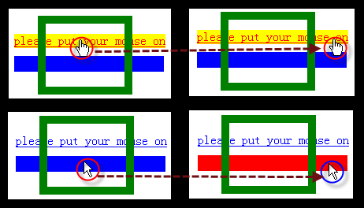
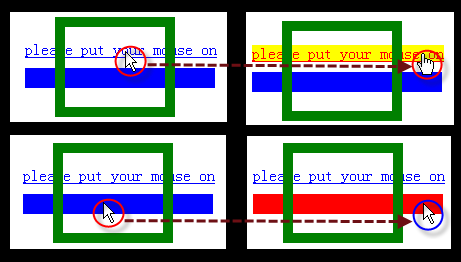
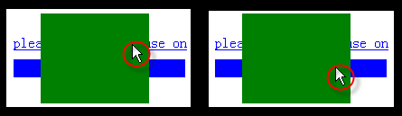
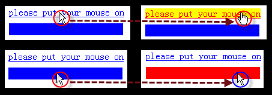

如果一个元素被另一个元素遮盖，不论遮盖元素的背景色是否是 'transparent'，也不论遮盖元素的透明度是否为全透明，被遮盖元素是不能响应用户的鼠标事件的。
关于 'background-color' 请参考 W3C CSS 2.1 规范 14.2.1 'background-color'
中的内容。
关于 'opacity' 请参考 W3C CSS 3 color module 规范 3.2
Transparency: the 'opacity' property 中的内容。
关于 'filter:alpha' 请参考 MSDN Alpha
Filter 中的内容。
在 IE6 IE7 IE8 中被透明元素遮挡的元素仍能响应鼠标事件，而其他浏览器则不能响应。
如果页面在设计时依赖 IE6 IE7 IE8 的此特性，将造成其他浏览器的用户无法操作部分区域。
| IE6 IE7 IE8 |
|---|
被一个元素遮挡，又能完全可见，只有一种情况，那就是遮挡元素完全透明。
让一个元素完全透明有两种方式：
在 IE6 IE7 IE8 下，遮挡元素的行框范围内，其下被遮挡的行内元素可响应鼠标事件，而块级元素则不能。 另外在 Firefox Safari Chrome 下，被遮挡的元素，不管是块级元素还是行内元素，都无法响应鼠标事件。
分析如下代码：
<style type="text/css"> body{margin:0;} a{color:blue;} a:hover{color:red;}
</style> <div> <a href="javascript:void(0);"
onmouseover="this.style.backgroundColor='yellow'"
onmouseout="this.style.backgroundColor='transparent'"> please put your mouse on </a>
<div style="height:20px; width:190px; margin-top:10px; background-color:blue;"
onmouseover="this.style.backgroundColor='red'"
onmouseout="this.style.backgroundColor='blue'"></div> <div
style="background-color:transparent;position:absolute;left:10%;top:-23px; border:10px solid
green;width:100px;height:80px;"></div> </div>
以上代码在各个浏览器下的结果汇总如下：
|
IE6
IE7 IE8 |
 |
|---|---|
|
Firefox
Safari Chrome |
 |
当遮挡元素的 'background-color' 不为 'transparent' 时，IE6 IE7 IE8 中被遮挡的元素不响应鼠标事件。
修改以上代码中遮挡元素的 'bacground-color' 为 'green'，此时在各个浏览器下的表现将一致：

此时在所有浏览器下，遮挡元素行框范围内，被遮挡元素都无法响应鼠标事件。分析如下代码：
<style type="text/css"> body{margin:0;} a{color:blue;} a:hover{color:red;}
</style> <div style="position:relative;margin:50px;width:300px;"> <a
href="javascript:void(0);" onmouseover="this.style.backgroundColor='yellow'"
onmouseout="this.style.backgroundColor='transparent'"> please put your mouse on </a>
<div style="height:20px; width:190px; margin-top:10px; background-color:blue;"
onmouseover="this.style.backgroundColor='red'"
onmouseout="this.style.backgroundColor='blue'"></div> <div
style="opacity:0;filter:alpha(opacity=0);background-color:green;
position:absolute;left:10%;top:-23px; border:10px solid
green;width:100px;height:80px;"></div> </div>
这时，所有浏览器下表现一致：

可见： 在 IE6 IE7 IE8 下，当遮挡元素的 'background-color' 为 'transparent' 时，其下被遮挡的行内元素可响应鼠标事件， 而块级元素则不能。而在其它浏览器下，被遮挡的元素都无法响应鼠标事件，无论它是块级元素还是行内元素。
| 操作系统版本: | Windows 7 Ultimate build 7600 |
|---|---|
| 浏览器版本: |
IE6
IE7 IE8 Firefox 3.6 Chrome 4.0.302.3 dev Safari 4.0.4 Opera 10.51 |
| 测试页面: | element_transparent_event.html |
| 本文更新时间: | 2010-07-02 |
transparent background-color click opacity filter 透明 遮挡